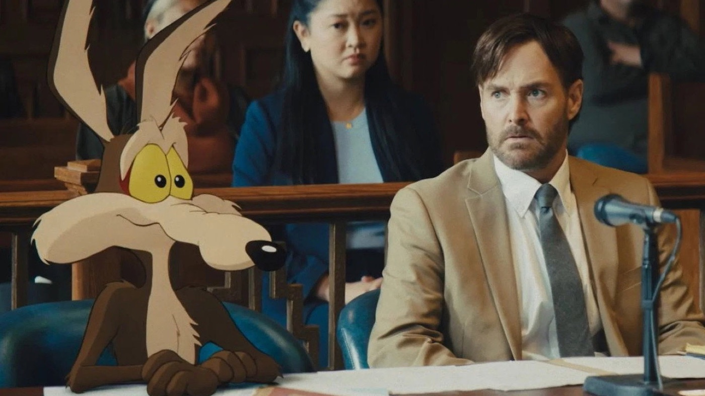
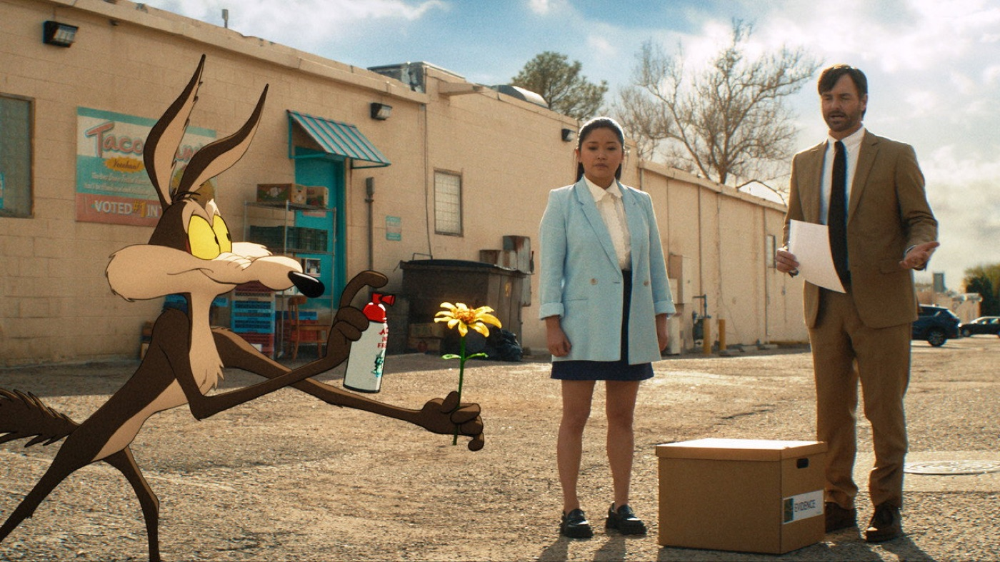

Coyote vs. Acme
La rivincita di Willy il Coyote è una lettera d'amore ai Looney Tunes
Finalmente giustizia per Willy il Coyote! Dopo essere stato completato e poi chiuso in un cassetto da Warner Bros., Coyote vs. Acme è arrivato in sala ed è una vera e propria lettera d'amore ai Looney Tunes.
Di che si parla?

Dopo anni di prodotti difettosi, Willy il Coyote decide di portare la Acme in tribunale. Al suo fianco c'è Kevin Avery, avvocato squattrinato con il volto di Will Forte, contro un John Cena perfetto nei panni del legale della multinazionale.
Il film fantasma
La storia dietro al film è quasi più incredibile del film stesso: completato e poi accantonato da Warner Bros. per motivi fiscali, è stato salvato dalle proteste dei fan e da Ketchup Entertainment. Vederlo finalmente in sala ha già il sapore della vittoria.
Cuore e cartoon

Dietro le gag c'è una commedia legale sorprendentemente intelligente, che riflette sulla natura stessa di Willy: un eterno sconfitto che non smette mai di provarci. Si ride tanto, ma ci si emoziona anche.
Il tallone d'Achille
L'animazione in cel-shading non ricrea del tutto il fascino dei cartoni originali, e la storia vera dietro al film resta più intrigante del film stesso. Difetti che però non rovinano il divertimento.
Un omaggio pieno d'amore ai Looney Tunes, divertente per grandi e piccini e con un cuore enorme. Willy si è finalmente preso la sua rivincita: correte in sala a fare il tifo per lui!